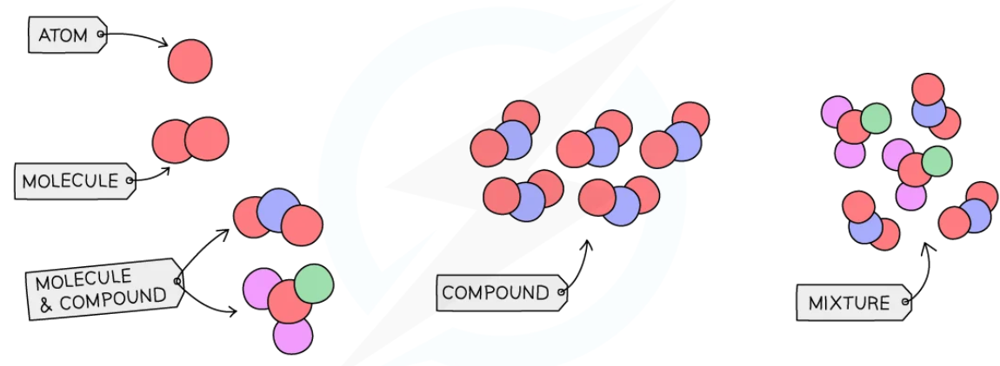
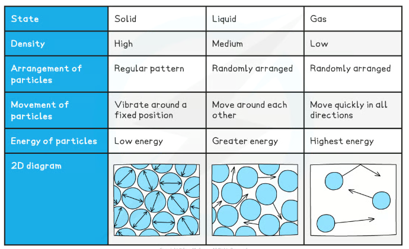
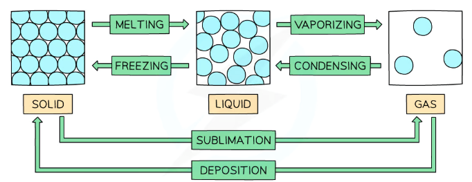
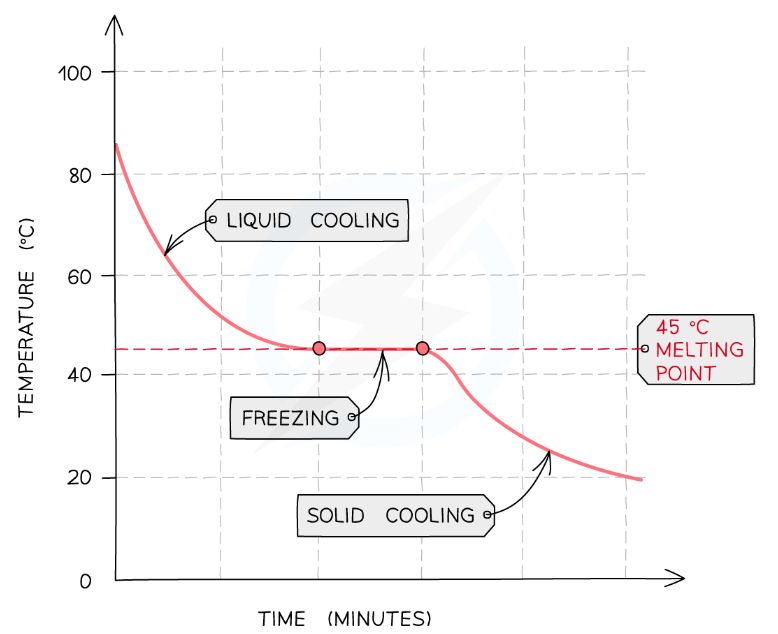
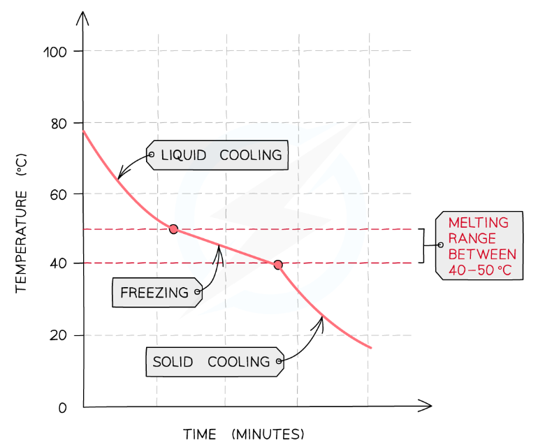

Pure Substances, Elements, Compounds and Mixtures

Atoms, molecules, compounds and mixtures
| Term | Definition | Example |
|---|
| Element | One type of atom only | Cu (copper), O₂ (oxygen gas) |
| Compound | Two or more different elements chemically bonded — cannot be separated by physical methods | H₂O, NaCl, CO₂ |
| Mixture | Two or more substances not chemically bonded — can be separated by physical methods | Salt water, air, crude oil |
| Pure substance | A single element or compound with no other substances mixed in — has a sharp, specific melting/boiling point | Pure water (m.p. 0 °C exactly) |
Common error: In everyday language "pure" means clean (e.g. "pure orange juice"). In chemistry, pure means a single substance. Orange juice is a mixture — it is not chemically pure. (Spec 2.3)
The Three States of Matter

Properties of solids, liquids and gases — particle model
Key points to learn:
➤ Solid: regular/close-packed arrangement; vibrate around fixed positions; cannot flow; cannot be compressed
➤ Liquid: random/close arrangement; move around each other; can flow; cannot be compressed
➤ Gas: random, widely spaced; move quickly in all directions; can flow; can be compressed
Exam tip: Always say particles "vibrate around a fixed position" for solids — not just "vibrate". For gases, say "move quickly in all directions" — not just "move fast".
State Changes

State changes and their names
| Change | Direction | Energy change | Name |
|---|
| Solid → Liquid | ↑ temp | Energy absorbed | Melting |
| Liquid → Solid | ↓ temp | Energy released | Freezing |
| Liquid → Gas | ↑ temp | Energy absorbed | Vaporising / Boiling / Evaporating |
| Gas → Liquid | ↓ temp | Energy released | Condensing |
| Solid → Gas | ↑ temp | Energy absorbed | Sublimation |
| Gas → Solid | ↓ temp | Energy released | Deposition |
What happens during a state change: The temperature does NOT change while a state change is happening — all the energy supplied goes into breaking (or forming) the forces between particles, not increasing kinetic energy.
Cooling Curves and Testing Purity

Pure substance — sharp melting point (45 °C)

Impure substance — melting range (40–50 °C)
How to use melting point to test purity:
➤ A pure substance has a sharp, specific melting point — the flat section on a cooling curve occurs at a single temperature
➤ An impure substance has a lower and broader melting range — the flat section is replaced by a sloped region spread over several degrees
➤ The more impurities present, the wider the melting range and the lower the melting point
Worked example: A student says a substance melts at "around 44–46 °C". The data book value for the pure substance is 45 °C. The range suggests the sample contains impurities — a pure sample would give exactly 45 °C with no spread. (Spec 2.6)
[H] Explaining why impurities lower the melting point: Impurity particles disrupt the regular arrangement of the crystal lattice. Less energy is required to break down the structure, so the solid melts at a lower temperature. The range is broader because different regions of the sample have different concentrations of impurities.
Energy in State Changes
| What happens | Exothermic or Endothermic? | Why |
|---|
| Melting, boiling, sublimation (bonds/forces broken) | Endothermic — energy taken IN | Energy needed to overcome forces between particles |
| Freezing, condensing, deposition (bonds/forces formed) | Exothermic — energy given OUT | Energy released as forces form between particles |
Misconception: Students often say "the bonds in water molecules break when water boils". They do not — the covalent O–H bonds inside water molecules stay intact. It is the intermolecular forces (forces between molecules) that are overcome during boiling.